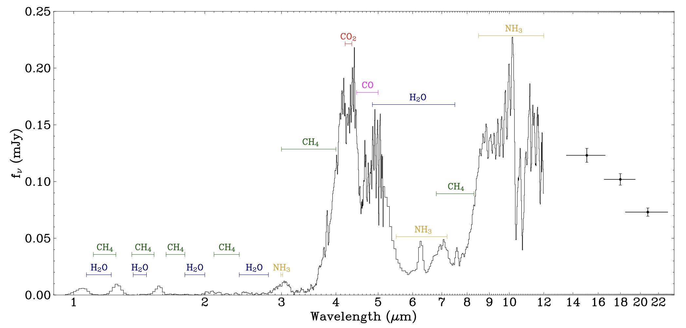
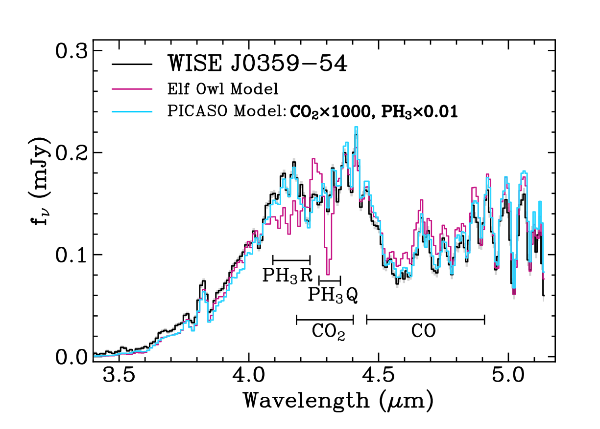
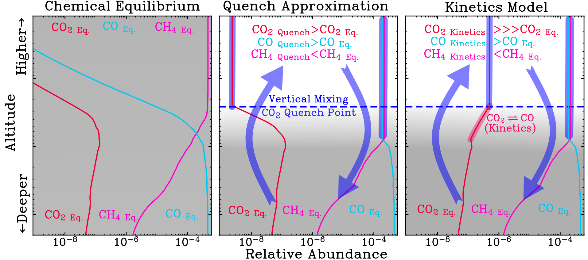
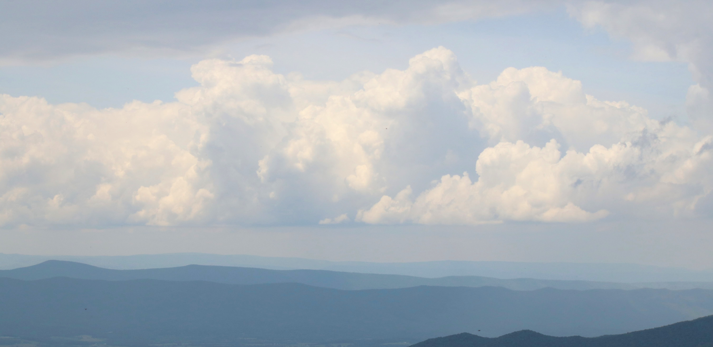
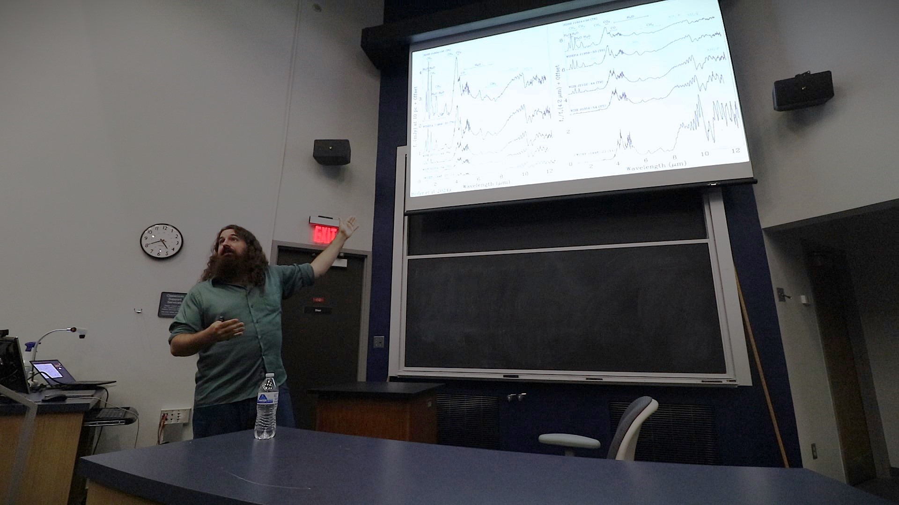
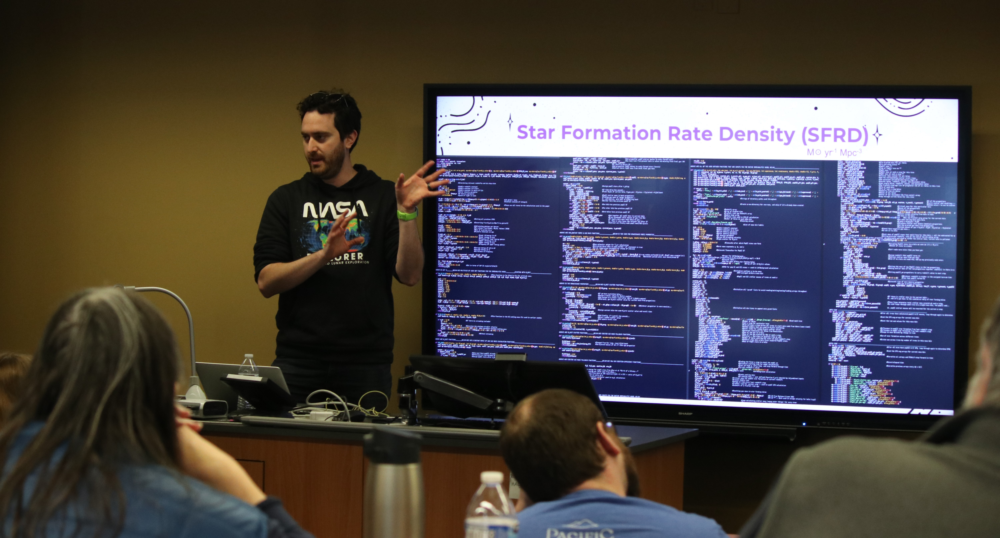

About Me

I am a graduate student in my final year at the University of Toledo, advised by Dr. Michael Cushing. The focus of my work is the atmospheres and fundamental properites of substellar objects, including brown dwarfs and exoplanets.
You can find a list of my publications via ADS.
In my spare time, I am a burgeoning photographer, avid reader, and novice disc golfer. I'm also always interested in any loose leaf tea recommendations!
Current and Past Research
The first JWST Spectral Energy Distribution of a Y dwarf from Beiler et. al 2023
My work is primarily focused on fundamental parameters of brown dwarf and
planetary mass objects, determining the strange chemistry of their atmospheres,
and probing the substellar mass function. Most notablty, I had the opprotunity to
lead the work for a 75 hours JWST Cycle 1 proposal and publish the first JWST SEDs
of the coldest brown dwarfs.
See the catagories below for more details on my work!
Calculating Luminosity
and Effective Temperature
from Broadband JWST SEDs
 Spectral Sequence of JWST Spectral Energy Distributions from Beiler et. al 2024a
Spectral Sequence of JWST Spectral Energy Distributions from Beiler et. al 2024a
I led the work for a 75 hour JWST Cycle 1 Program observing broad-wavelength
(1-21 μ) spectral energy distributions of 23 of the coldest brown dwarfs
(1000-350 K). The broad wavelength coverage of these observations allowed me to
account for 95% of the light emitted by these objects, resulting in precise and
accurate luminosity and temperature measurements. As a part of this work, I
published the first full SED of a Y dwarf, and identified the ν 1
vibrational band of ammonia for the first time (Beiler et al. 2023). For this paper I navigated the growing
pains of the official JWST reduction pipeline, including a correction to the MIRI LRS
wavelength calibration, which was used in the work of both stellar and galactic
astronomers.
I followed this work by publishing the full sample of 23 brown dwarf SEDs,
completing the luminosity calibration of the spectral sequence that has defined
stellar astronomy for over 100 years (Beiler et al. 2024b). With these luminosity measurements, I lowered
the effective temperature uncertainties of our sample by a factor of 5, achieving an
average fractional uncertainty of 4% for objects down to 360 K. Since the completion
of this project, I applied this technique to other objects, including WISE J0855, the
coldest brown dwarf (Melanie et al. 2024).
The Chemistry of Phosphine
and Carbon Dioxide in
Ultracool Atmospheres
I found that to fit WISE 0359-54 and other
late T and Y dwarfs with atmospheric models, a large increase in the carbon dioxide abundance and
decrement in the phosphine abundance are required.
I used Cycle 1 JWST data of cold brown dwarfs to study their atmospheric chemistry and found that the current
paradigm of atmospheric chemistry for phosphine and carbon dioxide was incorrect. By fitting JWST data with
atmospheric models that I generated, I showed the standard models under-predicted carbon dioxide
abundances by a factor of 200 and over-predicted phosphine abundances by a factor of 2. I also found
that the controversial first-ever detection of phosphine in UNCOVER-BD-3, a galactic disk brown dwarf,
could instead be explained by this enhancement of carbon dioxide.
The carbon dioxide discrepancy is a
result of the quench approximation commonly used to model how the chemistry is kept out of equilibrium
by vertical mixing (See the figure below). I used full chemical kinetics models to show that
interactions between carbon monoxide and carbon dioxide which the quench approximation was ignoring
would cause the significant carbon dioxide enhancement needed to match observations. New models are now
implementing this theory on carbon dioxide chemistry, resulting in improved fits to the data.

For phosphine, our knowledge of phosphorus chemical pathways is clearly incomplete, and significant
new chemical theory and laboratory work are underway to determine the problem. Keep an eye out for
future papers on modeling and observing phosphine!
Mass Function Work
In Progress
Check Back By the
Summer of 2025
Data, Model, and
Recorded Talk
Repositories

Community Building
Initiatives

Ritter Symposium
and the Case for
Intra-Departmental
Conferences
Graduate student Colton Feathers presenting his research on cosmological
simulations to the rest of the UToledo Astronomy Department.
For the last three years of my PhD I revived and organized Ritter Symposium,
an intra-departmental conference where the various researchers at UToledo can share
the work that they have completed over the last year. Each speaker is give ~7 minutes
to present and answer questions, and advisors often take this time to advertise new
project to first-year class of graduate students. The symposium has been a
resounding success for a number of reasons, and I believe most departments should
consider adopting a conference like this. The benefits include:
- Faster On-boarding for New Students:
The conference introdces undergraduates
and first-year graduate students to the department's research groups, lowering the
activiation energy for finding an advisor and beginning research. In the three
years since the start of the symposiums, first year graduate students have joined
their research groups 3 months earlier than previous year!
- Creating Space for Collaboration:
Within a department, it is easy to lose
touch of what everyone else is working on, and this can limit collaboration. The symposium
helps forge connections between groups, jumpstarting new ideas and making space to share
expertise.
- Practice Communicating Science:
For the younger students, the conference offers a
low pressure enviorment to practice talking about the big picture of their research. For the
older students, this lets them practice a different style and length of talk, and prepares
them to summerize their research for job applications.
Photography
All pictures used on this site (execept for the one of me on the main page) were taken by me!
There are just my favorites, as I didn't feel like uploading more than 15 photos
because I need to add them individually.
.JPG)
.png)
.JPG)
.JPG)
.JPG)
.JPG)
.JPG)
.JPG)
.JPG)
.JPG)
.JPG)
.JPG)
.JPG)
.JPG)
.JPG)
.JPG)